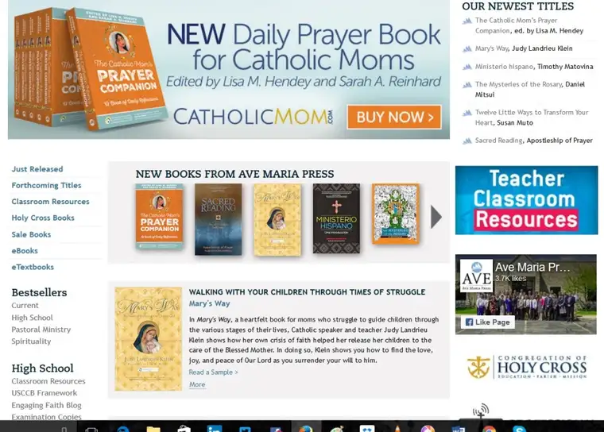
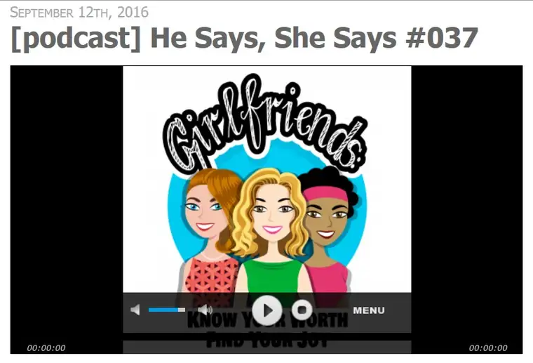

Well, I printed off the list of entrants for the giveaway of the Catholic Moms’ Prayer Companion to which I contributed, based on last week’s post (thank you all who entered!). I so wish I had 10 copies so that I could give one to each of you. But since I do not, I had to do as promised and choose a winner.

So after printing the names, I cut each out, cupped them in my hand and shook them vigorously. And then I totally gave this over to God. I asked God to please lift up the one who can use this book most right now. Because on my own I could not have chosen that person; God alone knows all our hearts. And the name that rose to the top? Sheila J.!
Of course, I am hoping that somehow, all of you who want a book, whether you entered or not, you will have a chance to procure a copy at some point. If so, I would love to send you an author’s “plate” (essentially a sticker) with my John Hancock to place inside. It is such an honor to be part of this project that I know it will lift up all who have a chance to own a copy. Please know that each of you who took time to enter is in my prayers today, and throughout the month.
God bless you, and Sheila, I hope you enjoy this as much as I think you will. To anyone who obtains a copy, please do let me know what you think!
Before I go, a fun side note: On Monday, I celebrated my baptism anniversary. There I am in my gown on Sept. 12, 1968. My Aunt Anne is the one tenderly holding my head while the priest sprinkles me with holy water. My father is visible partially just behind Anne.

That same day of that 48th anniversary, Danielle Bean (Catholic Digest magazine Editor-in-Chief) interviewed me for her “Girlfriends” podcast. You’ll find our conversation in the second half here. Here’s what Danielle said on her blog to introduce and “tease” our chat:
“This week I share an great conversation I had with Roxane Salonen who is a wife, mom, and author. Roxane shares about balancing writing with motherhood and some important things she has learned along the way. You will not want to miss the important words of wisdom that her friend Linda shared with her once. And we end with pickles and cinnamon candy! Sounds good, right?”
If you have a chance to wander over there, I think it will be an hour (or half-hour) well spent.

Blessings and peace, and in hope always,Roxane